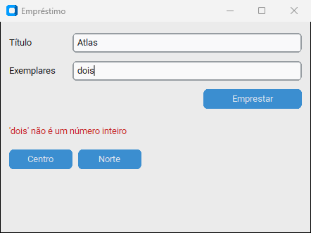
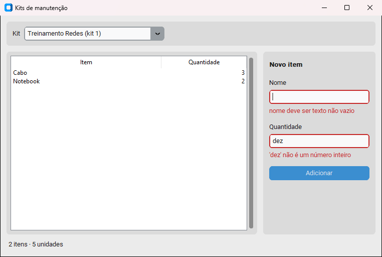

Técnico em Desenvolvimento de Sistemas · Plano de Curso 01/2025
Faça a janela responder: eventos, callbacks e validação
A janela da A11 mostra os itens, mas não reage a nada além da troca de kit. Hoje o botão Adicionar e o Enter passam a confirmar o formulário, a janela valida o que foi digitado com as regras do domínio e mostra os erros no próprio formulário, e entrega um item já validado a uma função que vem de fora. No caminho, você depura um cadastro herdado com os quatro tropeços mais comuns de quem começa com eventos.
A aula continua na janela da A11, com CustomTkinter 6.0.0. Gravar no MySQL pela janela é a A13: hoje a função que recebe o item só escreve no terminal. Use dados fictícios.
Antes da janela dos kits, alguém fez um cadastro rápido, cadastro_legado.py, e chegaram quatro relatos. Ao abrir, a janela já mostra Quantidade inválida, antes de qualquer clique, e clicar em Adicionar não faz nada. Os dois botões de kit escolhem o mesmo kit. Enter no campo Quantidade não faz nada, e o terminal mostra um TypeError.
O quarto relato é o pior: o cadastro aceitou um item sem nome e com quantidade 0, que o banco e o ItemKit recusariam.
Em dupla, antes de abrir o código, escrevam um palpite para cada relato. Por que uma janela pode mostrar um erro no terminal e continuar aberta, como se nada tivesse acontecido?
Entrega desta aula
No repositório do projeto: kits/janela.py com validação, botão e Enter ligados e a recusa mostrada no formulário; tests/test_janela.py com os testes de eventos; abrir_janela.py entregando a função anotar; tests/test_fontes.py ajustado; e a seção Cadastro pela janela no README.md. Faça um commit revisado e envie pelo canal combinado com a turma junto com o registro exportado desta página. Critério: os testes passam e, na janela, Alicate com 4 aparece no terminal como Para gravar no kit 1: Alicate (4).
Na A11, a janela ficava parada no mainloop. Ele não fica parado à toa: espera eventos do sistema (um clique, uma tecla, a janela mudando de tamanho), descobre em que widget cada um aconteceu e chama a função que você ligou àquele evento. Essa função é o callback: você entrega a função, e quem a chama é o mainloop, na hora do evento.
Há duas formas de ligar. A opção command, que botões, seletores e caixas de marcar têm, liga a ação principal do widget: o clique do botão, a escolha do seletor. Ela chama a função sem argumentos (o seletor passa o valor escolhido). O método bind liga qualquer evento a qualquer widget, com um nome entre sinais de menor e maior: '<Return>' é o Enter, '<KeyRelease>' é soltar uma tecla, '<Double-Button-1>' é o clique duplo. O bind chama a função com um argumento, o evento, que diz qual tecla, em que posição e em que widget.
Um callback que demora trava a janela: enquanto ele roda, o mainloop não redesenha nada nem atende outros cliques. Callbacks fazem pouco e voltam logo. Uma consulta curta ao banco cabe; um laço de minutos, não.
command e bind
Aspecto
command
bind
Em que widgets
Botão, seletor, caixa de marcar e outros com uma ação principal
Qualquer widget
Que evento
A ação principal: clicar, escolher, marcar
O que você nomear: '<Return>', '<KeyRelease>', '<Double-Button-1>'...
Como chama a função
Sem argumentos (o seletor passa o valor escolhido)
No Python, uma função é um valor como outro qualquer: dá para guardar numa variável e passar como argumento. confirmar é a função; confirmar() é chamar a função agora e usar o que ela devolveu. command=confirmar entrega a função ao botão. command=confirmar() chama confirmar enquanto a janela é montada e entrega ao botão o que ela devolveu, normalmente None: o botão fica sem ação, e o que confirmar fez apareceu antes de qualquer clique. É o relato 1 do cadastro herdado.
Quando a função não tem o formato que o evento pede, o lambda adapta. lambda _evento: self.confirmar() é uma função de um argumento, como o bind exige, que descarta o evento e chama confirmar sem nada. É o relato 3: ligar ao bind uma função sem parâmetros dá TypeError na hora da tecla.
Dentro de um laço, o lambda guarda o nome da variável, não o valor dela naquele momento. Quando o botão for clicado, o laço já terminou, e a variável vale o último valor: todos os botões fazem a mesma coisa. Um parâmetro com valor padrão, lambda kit_id=kit_id: escolher(kit_id), guarda o valor na hora em que o botão é criado. É o relato 2.
Chamar na hora de montar
confirmar roda uma vez, ao abrir, e o botão recebe None.
Tudo o que vem de um CTkEntry é texto. '4' não é 4, ' ' não é um nome, e 'dez' não é número. As regras para isso já existem: ler_quantidade, da A04, converte e recusa com QuantidadeInvalida; o ItemKit, da A05, recusa nome vazio e quantidade que não seja inteiro positivo. A janela chama essas regras e mostra as mensagens delas. Se a janela tivesse a própria regra, cedo ou tarde as duas discordariam, como no relato 4, que aceitou quantidade 0.
Mostre o erro onde ele está: embaixo do campo, em vermelho, com o campo destacado e o cursor nele. Se os dois campos estiverem errados, mostre os dois de uma vez; ninguém quer corrigir um, clicar e só então descobrir o outro. Quando a pessoa volta a digitar no campo, o erro dele some.
Uma exceção dentro de um callback não fecha a janela. O tkinter escreve Exception in Tkinter callback e o traceback no terminal e volta ao mainloop, e quem usa a janela não vê nada. Por isso a janela captura só as exceções que sabe explicar (QuantidadeInvalida, ValueError do nome, a recusa de quem grava) e deixa as outras aparecerem: um except Exception que mostra Erro inesperado esconderia um defeito, como você viu na A04.
A JanelaItens ganha um terceiro parâmetro, adicionar(kit_id, item). Ela valida, monta o ItemKit e entrega. Não sabe o que acontece depois: hoje, abrir_janela.py entrega anotar, que escreve no terminal o que seria gravado; nos testes, uma função que guarda o que recebeu numa lista; na A13, uma função que grava no MySQL.
Quem recebe o item também pode recusar: o kit pode ter sido removido, o banco pode recusar. O combinado é recusar com LookupError ou ValueError e uma mensagem que diga o porquê. A janela mostra Não adicionado: e a mensagem, e não apaga o que foi digitado, para a pessoa poder corrigir e tentar de novo.
O tutorial usa uma janela de empréstimo de livros, com dados fixos. Crie emprestimo.py na raiz do projeto com o código do passo 1. Os passos seguintes trocam ou acrescentam trechos, e a legenda de cada um diz onde. Rode com .\.venv\Scripts\python.exe emprestimo.py e faça o que o passo pede: digitar, clicar, teclar Enter. Os erros aparecem no PowerShell, não na janela.
As imagens são capturas reais das janelas geradas por esse código, depois das ações descritas em cada passo, no Windows 11 com CustomTkinter 6.0.0. As telas do terminal vieram da execução do mesmo código.
Repare: A resposta vazia apareceu ao abrir, quando emprestar() rodou com os campos vazios. O clique não faz nada: o botão recebeu None. Volte a linha do passo 1.
Passo 3 · Antes do janela.mainloop(), com o botão do passo 1
Rode, digite Atlas e dois e tecle Enter no campo Exemplares.
PS C:\projetos\kits> .\.venv\Scripts\python.exe emprestimo.py
Exception in Tkinter callback
Traceback (most recent call last):
File "C:\Python314\Lib\tkinter\__init__.py", line 2114, in __call__
return self.func(*args)
~~~~~~~~~^^^^^^^
File "C:\projetos\kits\emprestimo.py", line 28, in <lambda>
quantos.bind('<Return>', lambda _evento: emprestar())
~~~~~~~~~^^
File "C:\projetos\kits\emprestimo.py", line 20, in emprestar
exemplares = int(quantos.get())
ValueError: invalid literal for int() with base 10: 'dois'
Repare: O int recusou dois com ValueError dentro do callback. A janela continua igual e quem usa não fica sabendo de nada.
Passo 8 · Troque a função emprestar de novo: com a recusa na tela
def emprestar():
try:
exemplares = int(quantos.get())
except ValueError:
resposta.configure(text=f'{quantos.get()!r} não é um número inteiro', text_color='#c62828')
quantos.focus_set()
return
resposta.configure(text=f'Pedido: {exemplares} × {titulo.get()}', text_color=('gray10', '#DCE4EE'))
Passo 8 · A recusa na janela
Rode, digite Atlas e dois e clique em Emprestar.

Repare: O except pegou só o ValueError do int, mostrou a mensagem e pôs o cursor no campo. Na prática, quem converte e explica é o ler_quantidade do domínio.
Mensagens desta aula
Mensagem
O que significa
O que fazer
Exception in Tkinter callback
Uma exceção escapou de um callback. A janela continua aberta, e o traceback logo abaixo diz qual.
Leia a última linha do traceback e a linha do seu arquivo acima dela.
TypeError: f() takes 0 positional arguments but 1 was given
Um bind chamou com o evento uma função sem parâmetros.
Ligue com lambda _evento: f() ou dê um parâmetro à função.
ValueError: invalid literal for int() with base 10: 'dois'
Texto convertido sem tratamento dentro de um callback.
Converta com ler_quantidade e mostre a QuantidadeInvalida no formulário.
Uma ação que acontece ao abrir a janela, e o clique que não faz nada
Parênteses no command: a função rodou na montagem.
command=funcao, sem parênteses.
Todos os botões de um laço fazem a mesma coisa
O lambda leu a variável do laço na hora do clique.
Continue no repositório do projeto, na raiz, com o .venv da A11. Uma pessoa opera e a outra confere; troquem os papéis depois do intervalo.
A ordem importa: a janela com os testes sem banco, a ligação em abrir_janela.py e só então o cadastro herdado. Se consultar IA, registre a ajuda recebida e confirme cada sugestão rodando os testes.
Como o formulário recusa
Capturada com abrir_janela.py lendo o banco kits, depois de clicar em Adicionar com Nome em branco e Quantidade dez.

kits/janela.py: validar, confirmar e os eventos
Faça na sua JanelaItens da A11 as mudanças descritas no arquivo: o terceiro parâmetro adicionar; um rótulo de erro embaixo de cada campo e um aviso embaixo do botão; o botão e o Enter chamando confirmar; qualquer outra tecla apagando o erro do campo; validar com ler_quantidade e ItemKit, mostrando os dois erros de uma vez; e confirmar entregando o item, mostrando a recusa sem apagar os campos ou, sem recusa, limpando os campos e mostrando a lista de novo. A janela continua sem importar nada do banco. Entrega: kits/janela.py.
Concluído quando: Os catorze testes de tests/test_janela.py passam, inclusive os três que você vai completar na próxima atividade, e a janela recusa como a imagem acima.
Dica para realizar a atividade
Volte ao passo 2 do tutorial antes de escrever o command. E para o bind: quantos argumentos ele passa à função?
# Mudanças na sua kits/janela.py da A11. O resto da JanelaItens continua igual.
from kits.modelo import ItemKit
from kits.regras import QuantidadeInvalida, ler_quantidade
VERMELHO = '#c62828'
VERDE = '#2e7d32'
class JanelaItens(ctk.CTk):
"""listar_kits() devolve [(id, nome)]; listar_itens(kit_id) devolve [(id, nome, quantidade)];
adicionar(kit_id, item) recebe um ItemKit já validado e pode recusar com LookupError ou ValueError."""
def __init__(self, listar_kits, listar_itens, adicionar):
# Guarde adicionar em self._adicionar. Sem kits, desligue também o botão Adicionar.
...
def _montar_formulario(self):
# Cada campo ganha, logo abaixo, um rótulo de erro vermelho e vazio: self.erro_nome e self.erro_quantidade.
# O botão Adicionar passa a chamar self.confirmar no clique (cuidado com os parênteses).
# Abaixo do botão, self.aviso: um rótulo para o resultado (verde) ou a recusa de quem grava (vermelho).
# Nos dois campos: Enter confirma, como o botão; qualquer outra tecla apaga o erro daquele campo.
...
def validar(self):
"""Devolve um ItemKit ou None. As regras são as do domínio (A04 e A05); a janela só mostra as mensagens.
Confira os dois campos e mostre os dois erros de uma vez, com a mensagem que o domínio deu."""
...
def confirmar(self):
"""O que o botão Adicionar e o Enter fazem: validar, entregar a self._adicionar(kit, item),
mostrar a recusa (LookupError ou ValueError) sem perder o que foi digitado, ou limpar os campos,
avisar Adicionado: Nome (quantidade). e mostrar a lista de novo."""
...
Na raiz do projeto. Testes: .\.venv\Scripts\python.exe -m unittest -v, na raiz do projeto. Os testes da janela abrem janelas de verdade por alguns instantes e não precisam do MySQL; não mexa no mouse nem no teclado enquanto rodam.
tests/test_janela.py: os testes de eventos
O arquivo substitui o da A11: a função abrir passa a entregar um adicionar que guarda o que recebeu em self.entregues, ou recusa, se pedido. Ele já tem onze testes, os seis da A11 adaptados, quatro de validação e um que exige que a janela não esconda um defeito de quem grava. Escreva os três marcados com Complete: Enter confirma como o botão; uma tecla apaga o erro do campo; e a recusa de quem grava aparece e mantém os campos. Entrega: tests/test_janela.py.
Concluído quando: Os catorze testes passam com o seu código. Depois troque, no bind do Enter, o lambda _evento: self.confirmar() por self.confirmar: o teste do Enter precisa falhar. Desfaça a troca.
Dica para realizar a atividade
Eventos de teclado vão para o widget com foco. Sem focus_set e um update antes do event_generate, a tecla não chega a lugar nenhum.
"""A janela com dados de mentira: roda sem MySQL, mas abre uma janela de verdade por alguns instantes."""
import unittest
from kits.janela import JanelaItens
KITS = [(1, 'Treinamento Redes'), (2, 'Treinamento Suporte')]
ITENS = {1: [(1, 'Cabo', 3), (2, 'Notebook', 2)], 2: [(3, 'Cabo', 5)]}
def fechar(janela):
# O CustomTkinter agenda tarefas com after (o ícone da barra de título, por exemplo).
# Cancelar antes de destruir evita avisos de "invalid command name" no fim do teste.
for tarefa in janela.tk.call('after', 'info'):
janela.after_cancel(tarefa)
janela.destroy()
class TestJanela(unittest.TestCase):
def abrir(self, kits=KITS, itens=ITENS, recusa=None):
self.pedidos = []
self.entregues = []
def listar_itens(kit_id):
self.pedidos.append(kit_id)
return itens.get(kit_id, [])
def adicionar(kit_id, item):
if recusa:
raise recusa
self.entregues.append((kit_id, item.nome, item.quantidade))
janela = JanelaItens(lambda: kits, listar_itens, adicionar)
self.addCleanup(fechar, janela)
janela.update()
return janela
def linhas(self, janela):
return [tuple(janela.lista.item(i, 'values')) for i in janela.lista.get_children()]
def escolher(self, janela, kit_id):
rotulo = next(r for r in janela.kit.cget('values') if r.endswith(f'(kit {kit_id})'))
janela.kit.set(rotulo)
janela.mostrar()
def preencher(self, janela, nome, quantidade):
for campo, texto in ((janela.nome, nome), (janela.quantidade, quantidade)):
campo.delete(0, 'end')
if texto:
campo.insert(0, texto)
def erros(self, janela):
return janela.erro_nome.cget('text'), janela.erro_quantidade.cget('text')
# A11: a lista e a grade.
def test_abre_no_primeiro_kit_com_os_itens_dele(self):
janela = self.abrir()
self.assertEqual(janela.kit_atual(), 1)
self.assertEqual(self.linhas(janela), [('Cabo', '3'), ('Notebook', '2')])
def test_cada_linha_guarda_o_id_do_item(self):
janela = self.abrir()
self.assertEqual(janela.lista.get_children(), ('1', '2'))
def test_trocar_de_kit_troca_a_lista_sem_repetir(self):
janela = self.abrir()
self.escolher(janela, 2)
self.escolher(janela, 1)
self.assertEqual(self.linhas(janela), [('Cabo', '3'), ('Notebook', '2')])
self.assertEqual(self.pedidos, [1, 2, 1])
def test_status_conta_itens_e_unidades(self):
janela = self.abrir()
self.assertEqual(janela.status.cget('text'), '2 itens · 5 unidades')
self.escolher(janela, 2)
self.assertEqual(janela.status.cget('text'), '1 item · 5 unidades')
def test_lista_cresce_com_a_janela(self):
janela = self.abrir()
janela.geometry('640x400')
janela.update()
largura, altura = janela.lista.winfo_width(), janela.lista.winfo_height()
janela.geometry('1100x720')
janela.update()
self.assertGreater(janela.lista.winfo_width(), largura + 300)
self.assertGreater(janela.lista.winfo_height(), altura + 200)
def test_sem_kits_avisa_e_nao_deixa_adicionar(self):
janela = self.abrir(kits=[])
self.assertEqual(janela.status.cget('text'), 'Nenhum kit cadastrado.')
self.assertEqual(self.pedidos, [])
self.assertEqual(janela.adicionar.cget('state'), 'disabled')
# A12: eventos e validação.
def test_abre_sem_erros_e_so_o_clique_valida(self):
janela = self.abrir()
self.assertEqual(self.erros(janela), ('', ''))
janela.adicionar.invoke()
self.assertNotEqual(self.erros(janela), ('', ''))
self.assertEqual(self.entregues, [])
def test_valido_entrega_um_item_do_dominio_e_limpa_o_formulario(self):
janela = self.abrir()
self.preencher(janela, ' Alicate ', '4')
janela.adicionar.invoke()
self.assertEqual(self.entregues, [(1, 'Alicate', 4)])
self.assertEqual((janela.nome.get(), janela.quantidade.get()), ('', ''))
self.assertEqual(janela.aviso.cget('text'), 'Adicionado: Alicate (4).')
self.assertEqual(self.pedidos, [1, 1])
def test_quantidade_invalida_mostra_a_mensagem_do_dominio(self):
janela = self.abrir()
for texto, mensagem in (('dez', "'dez' não é um número inteiro"), ('0', '0 não é maior que zero'),
('2.5', "'2.5' não é um número inteiro")):
with self.subTest(texto):
self.preencher(janela, 'Alicate', texto)
janela.adicionar.invoke()
self.assertEqual(self.erros(janela), ('', mensagem))
self.assertEqual(self.entregues, [])
def test_nome_em_branco_e_quantidade_errada_aparecem_juntos(self):
janela = self.abrir()
self.preencher(janela, ' ', '-1')
janela.adicionar.invoke()
self.assertEqual(self.erros(janela), ('nome deve ser texto não vazio', '-1 não é maior que zero'))
self.assertEqual(self.entregues, [])
def test_defeito_de_quem_grava_nao_e_escondido(self):
janela = self.abrir(recusa=AttributeError("'ItemKit' object has no attribute 'nme'"))
self.preencher(janela, 'Alicate', '4')
with self.assertRaises(AttributeError):
janela.confirmar()
# Complete: com nome e quantidade válidos, Enter no campo Quantidade entrega o item, como o botão.
# Dica: campo.focus_set(), janela.update(), campo.event_generate('<Return>') e janela.update().
# Complete: depois de um erro na quantidade, uma tecla nesse campo apaga o erro dele, e só o dele.
# Dica: event_generate('<KeyRelease>', keysym='BackSpace').
# Complete: se adicionar recusar com LookupError, o aviso diz Não adicionado: e a mensagem,
# e o que foi digitado continua nos campos. Use self.abrir(recusa=LookupError('...')).
Na raiz do projeto. Testes: .\.venv\Scripts\python.exe -m unittest -v, na raiz do projeto. Os testes da janela abrem janelas de verdade por alguns instantes e não precisam do MySQL; não mexa no mouse nem no teclado enquanto rodam.
abrir_janela.py: a função anotar
Acrescente a abrir_janela.py a função anotar(kit_id, item), que escreve no terminal Para gravar no kit N: Nome (quantidade), e entregue-a à JanelaItens como terceiro argumento. Ajuste o teste test_janela_mostra_os_itens_do_banco de tests/test_fontes.py, que cria a janela com dois argumentos. Entrega: abrir_janela.py e tests/test_fontes.py.
Concluído quando: Os testes passam e, com o MySQL ligado, .\.venv\Scripts\python.exe abrir_janela.py abre a janela; Alicate com 4 aparece no terminal como Para gravar no kit 1: Alicate (4) e some dos campos, e Quantidade dez mostra o erro sem escrever nada no terminal.
Dica para realizar a atividade
anotar não valida nada. Por quê?
def anotar(kit_id, item):
"""A12: a janela já valida e entrega um ItemKit; gravar no banco é a A13, que troca esta função."""
...
Na raiz do projeto, com o MySQL ligado: .\.venv\Scripts\python.exe -m unittest -v e .\.venv\Scripts\python.exe abrir_janela.py.
cadastro_legado.py: rastreie os quatro relatos
Salve o script abaixo como cadastro_legado.py na raiz e reproduza cada relato, olhando a janela e o PowerShell. Para cada um, registre a linha culpada, a evidência e a correção em uma linha. Corrija o relato 1 antes de tentar o 4. Diga também qual teste do seu test_janela.py reprovaria o mesmo defeito na JanelaItens, ou por que nenhum reprovaria. Entrega: a tabela no registro desta página. O cadastro_legado.py não vai para o commit.
Concluído quando: Os quatro relatos têm causa com a linha, evidência observada (inclusive o traceback do relato 3) e correção; o relato 4 aponta a regra duplicada e a correção usa ler_quantidade e ItemKit.
Dica para realizar a atividade
No relato 1, por que o aviso aparece antes de qualquer clique? Volte ao passo 2 do tutorial.
Na raiz do projeto: .\.venv\Scripts\python.exe cadastro_legado.py. Não precisa do MySQL.
README.md: a seção Cadastro pela janela
Acrescente ao README.md do projeto a seção Cadastro pela janela: o que o formulário já faz (validação, Enter, mensagens); o que ainda não grava e onde isso vai mudar; o combinado entre a janela e a função adicionar (o que recebe, como recusa); e como conferir. Entrega: a seção no README.md da raiz.
Concluído quando: Outra dupla, só com o README, abre a janela, provoca os dois erros e um cadastro válido, e diz onde vai a gravação da A13.
Dica para realizar a atividade
Quem for escrever a função que grava na A13 precisa saber o que ela recebe e como recusar. Está escrito?
## Cadastro pela janela
### O que já funciona
### O que ainda não grava
### Como a janela fala com o resto
### Como conferir
Texto para colar no README.md do projeto. A prova é outra dupla seguir os passos sem perguntar nada.
Bônus: o botão que só liga quando dá
Planeje e escreva um método que deixe o botão Adicionar desligado enquanto algum campo estiver vazio e o ligue quando os dois tiverem texto, usando o <KeyRelease> que a janela já tem. Diga onde chamá-lo e que teste da janela precisa mudar, e por quê. Entrega (opcional): o texto e o código no registro desta página.
Concluído quando: O botão começa desligado, liga com os dois campos preenchidos e volta a desligar depois de um cadastro; o texto explica que campo preenchido não é campo válido e aponta o teste que muda.
Dica para realizar a atividade
O invoke() de um botão desligado faz alguma coisa?
# Botão que só liga quando dá
## A ideia
## Como
## O que muda nos testes
Teste na sua JanelaItens, rodando .\.venv\Scripts\python.exe abrir_janela.py, e rode os testes.
Responda às perguntas, classifique as situações e julgue os achados da revisão. Sempre que puder, confira rodando o tutorial ou os testes antes de decidir. A correção é feita com o professor depois da tentativa.
Outra dupla entregou o formulário abaixo, e uma ferramenta de revisão listou três achados. Julgue cada um: é problema real ou não?
Entregue, no repositório do projeto: kits/janela.py; tests/test_janela.py; abrir_janela.py com anotar; tests/test_fontes.py ajustado; e a seção Cadastro pela janela no README.md. O emprestimo.py e o cadastro_legado.py ficam fora do commit.
No registro desta página, cole a tabela dos quatro relatos do cadastro herdado, a saída dos testes e a linha que apareceu no terminal ao cadastrar Alicate com 4. Se fez o bônus, cole o texto e o código.
Faça um commit revisado, como na A04: confira com git diff --cached que banco.ini não entrou. A exportação reúne o que você preencheu aqui; os arquivos do projeto seguem pelo commit e pelo canal da turma.
No relato 1, a mensagem Quantidade inválida apareceu antes de qualquer clique. Quem chamou adicionar naquela hora, e quem deveria chamar?
Na A13, a função anotar dá lugar a uma que grava no MySQL, numa transação, e a lista passa a mostrar o item novo. A janela que você terminou hoje não muda.